Слева — доска, как её оставил агент. В середине — что из неё делал роутер раньше. Справа — что он делает теперь, когда стрелке, попавшей в пересечение, разрешено сменить сторону и сдвинуть точку крепления одним ходом.
brd_zkuvpvwpm3(Доска 4)
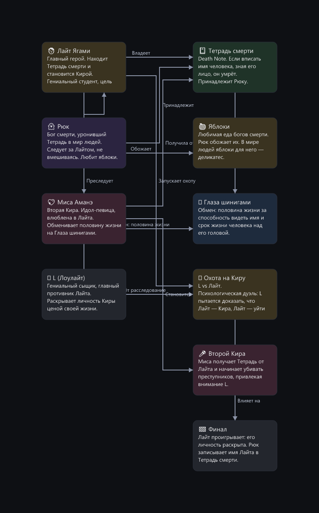
как оставил агент — 15/100, пересечений 8
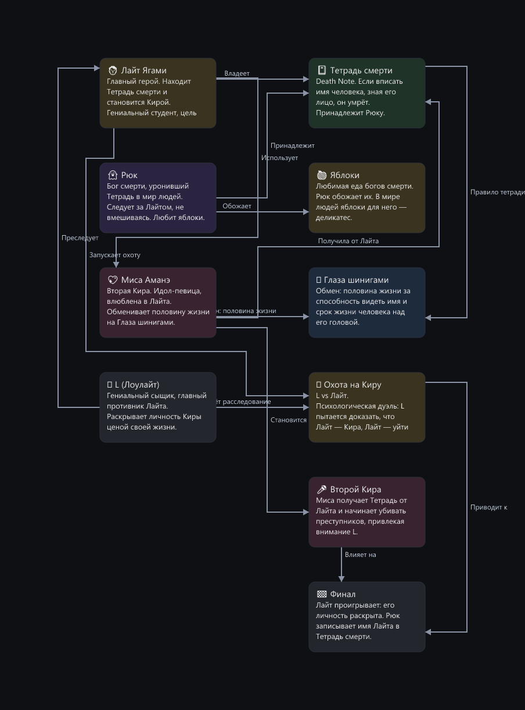
роутер раньше — 32/100, пересечений 4
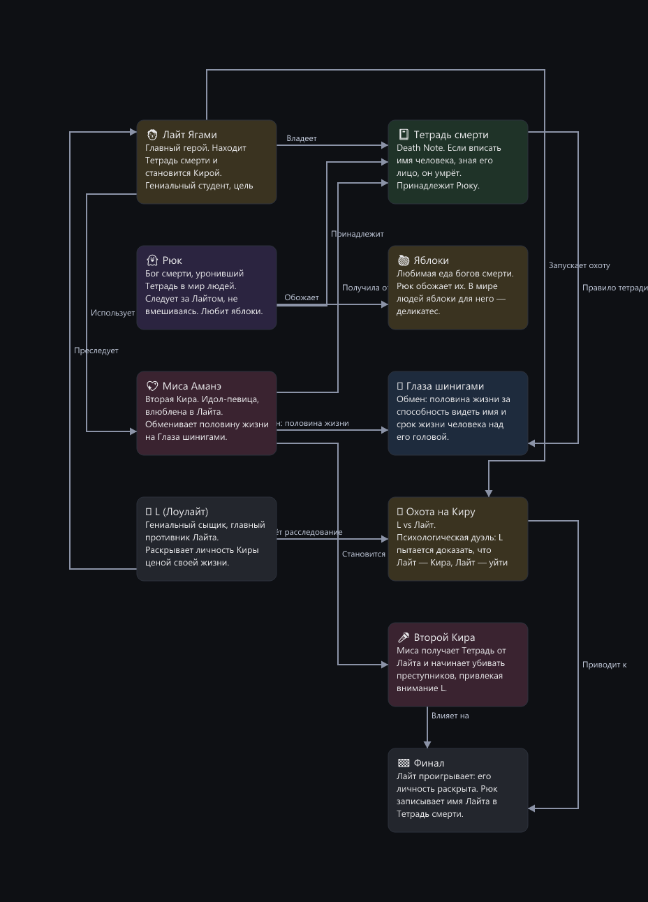
роутер сейчас — 35/100, пересечений 4
brd_vl1t4dbj48(Доска 8)
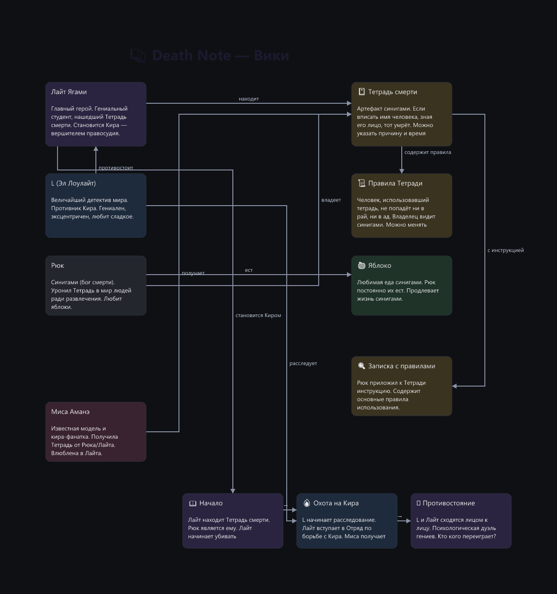
как оставил агент — 28/100, пересечений 12
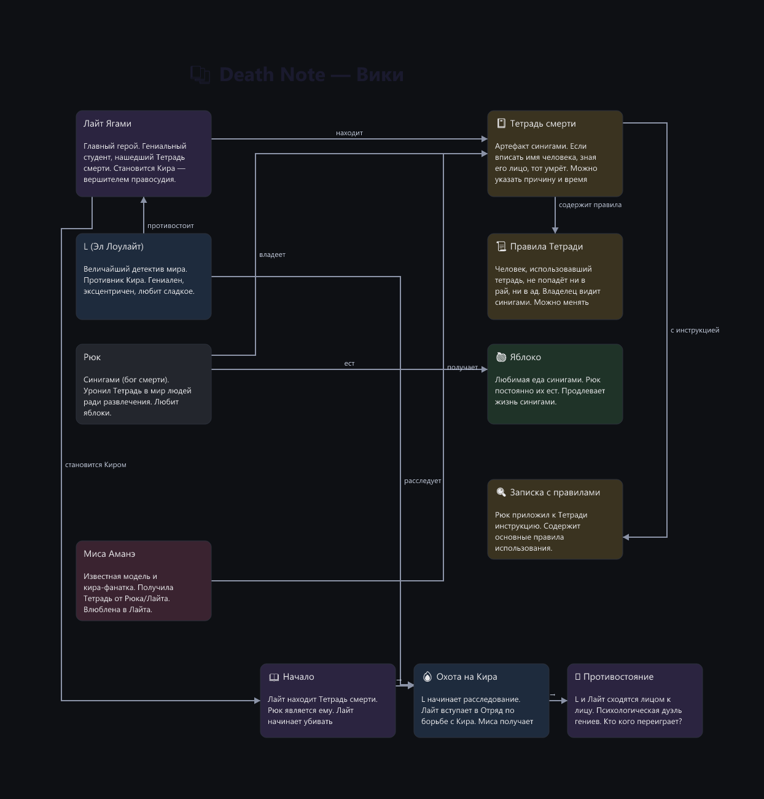
роутер раньше — 41/100, пересечений 4
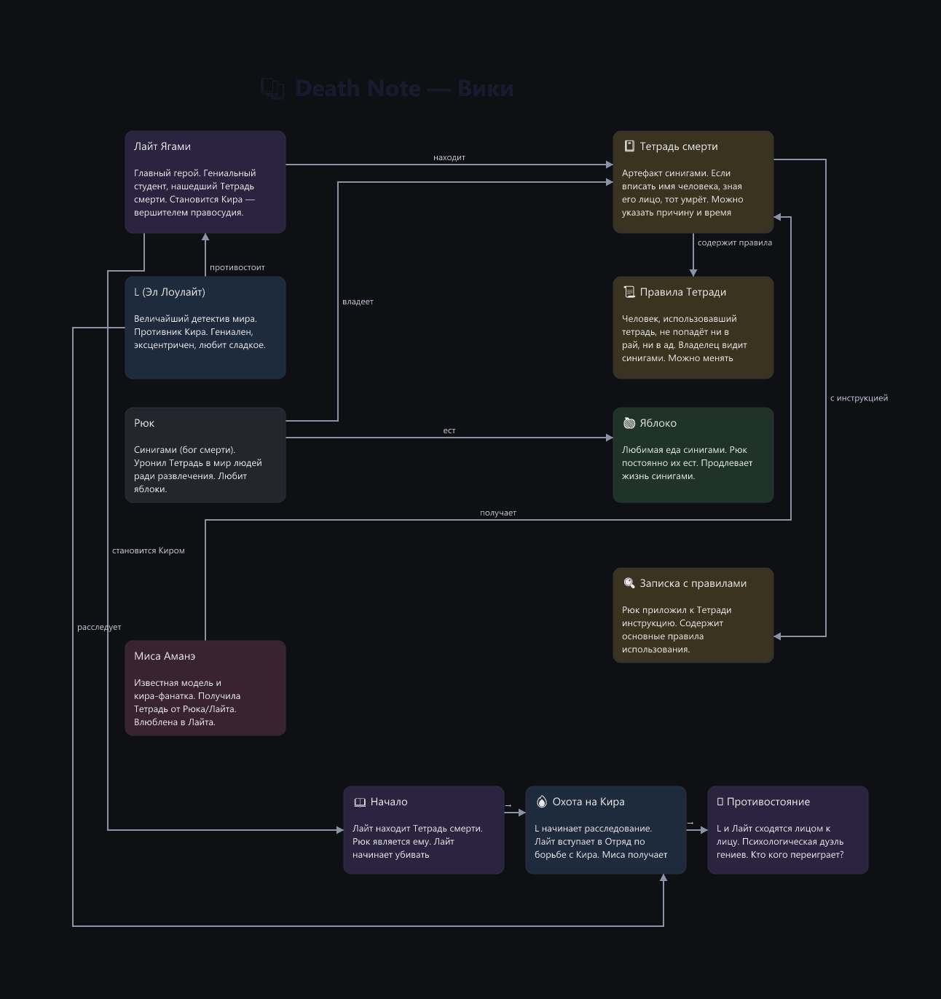
роутер сейчас — 47/100, пересечений 1
AUTO/dense-arch__deepseek-v4-flash
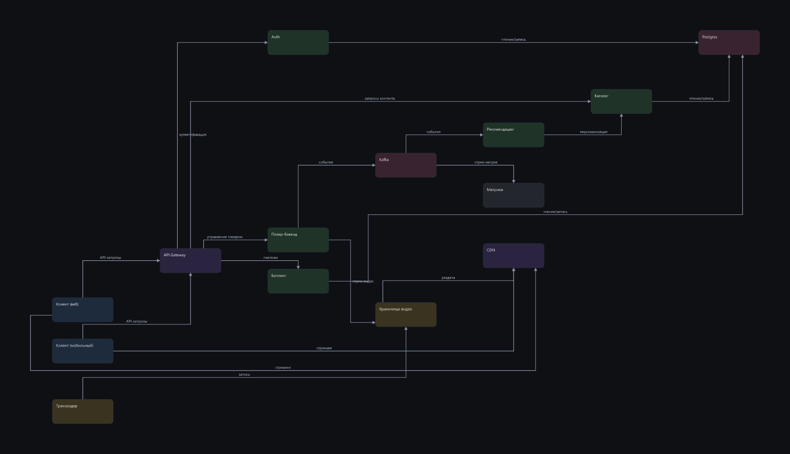
как оставил агент — 56/100, пересечений 3
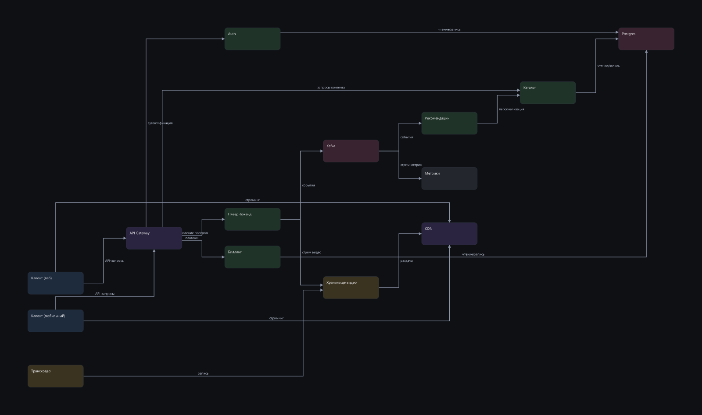
роутер раньше — 43/100, пересечений 7роутер сейчас — 59/100, пересечений 3
AUTO/states-order__deepseek-v4-flash
как оставил агент — 88/100, пересечений 0
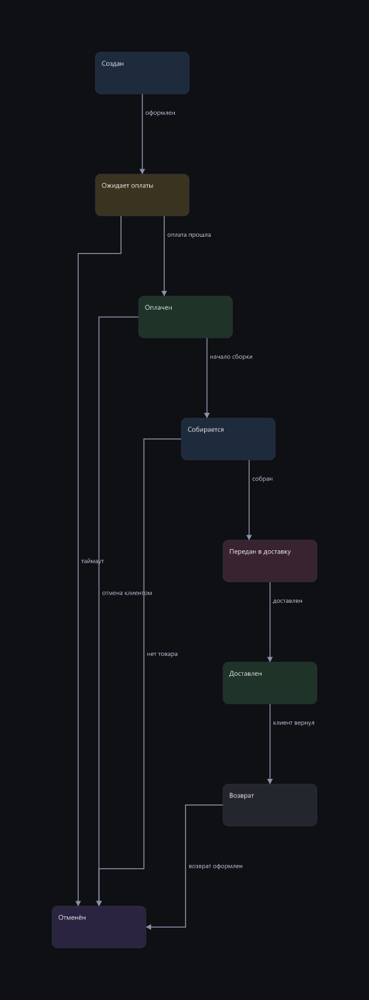
роутер раньше — 86/100, пересечений 0
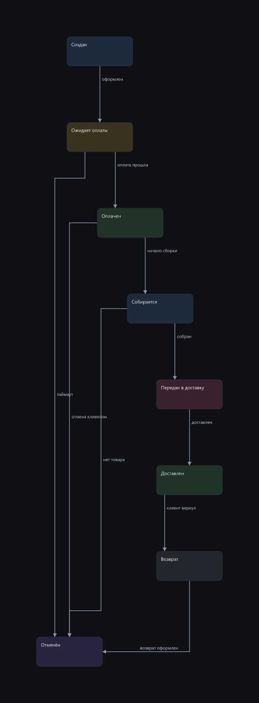
роутер сейчас — 88/100, пересечений 0
AUTO/wiki-anime__deepseek-v4-flash
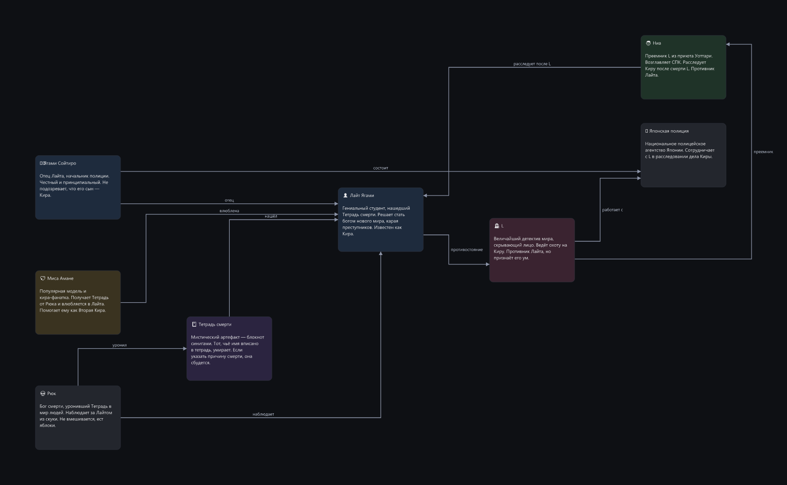
как оставил агент — 84/100, пересечений 1
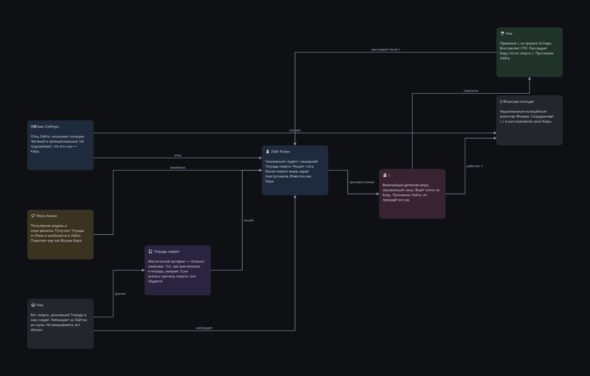
роутер раньше — 71/100, пересечений 2
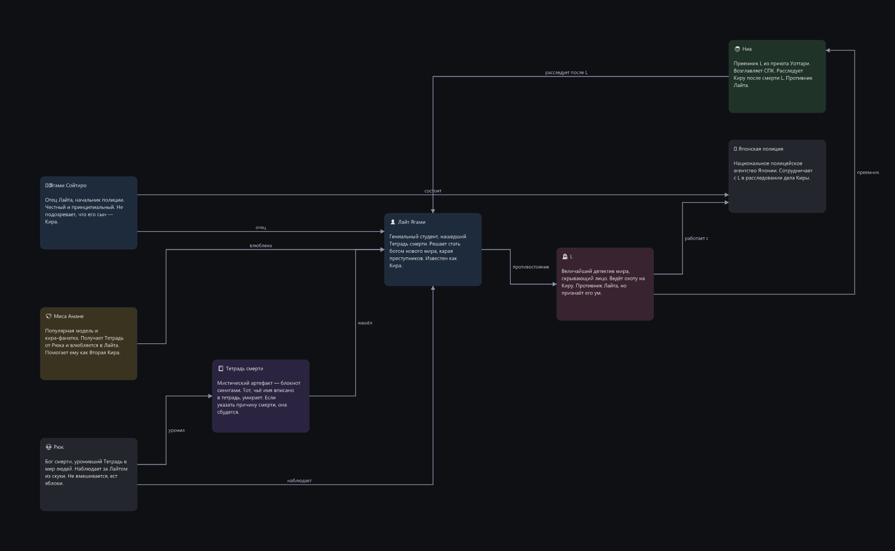
роутер сейчас — 84/100, пересечений 1
CHOICE/dense-arch__deepseek-v4-flash
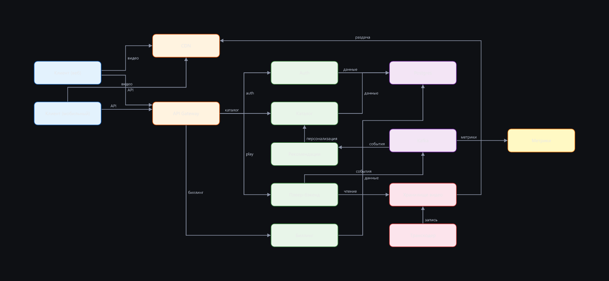
как оставил агент — 47/100, пересечений 5роутер раньше — 50/100, пересечений 5